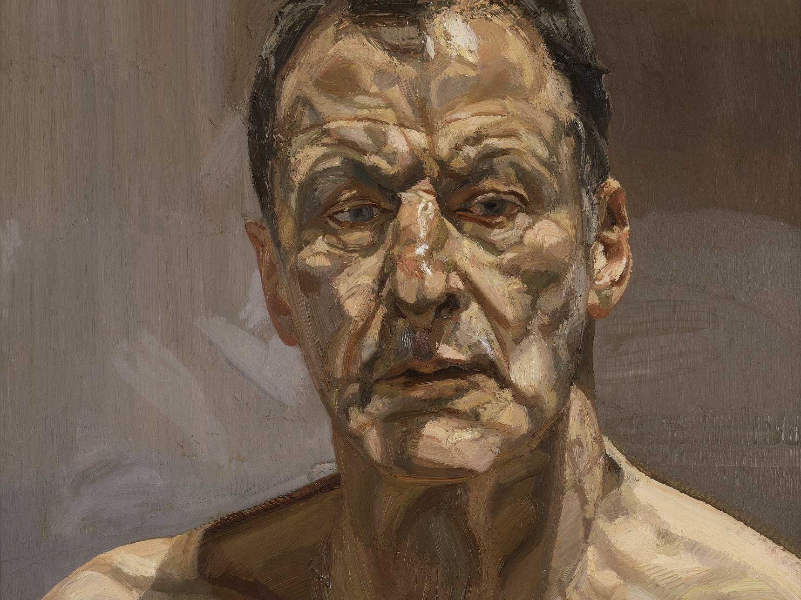
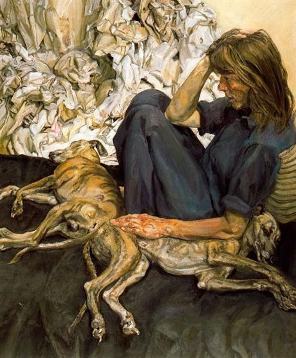
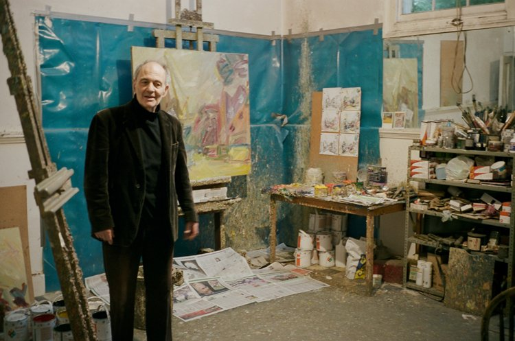
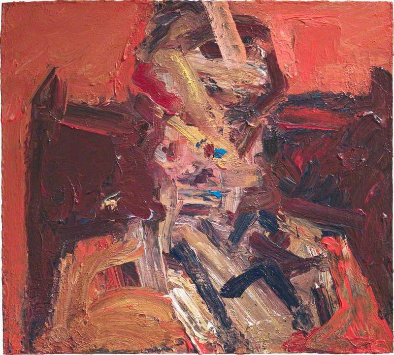
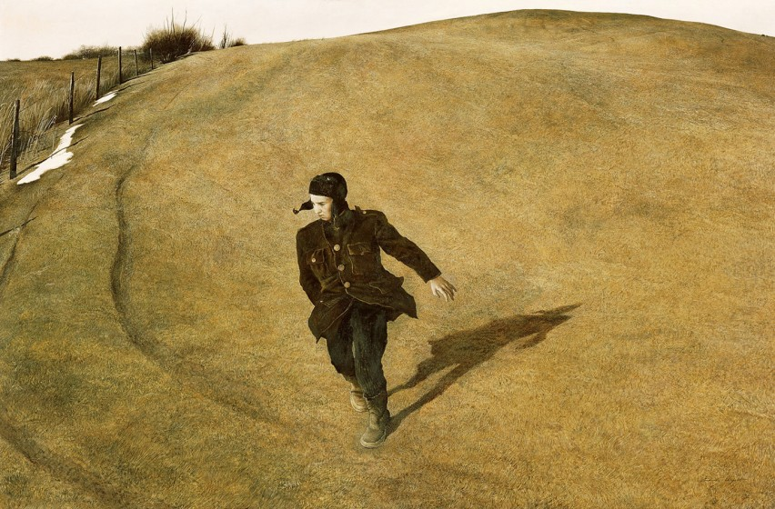
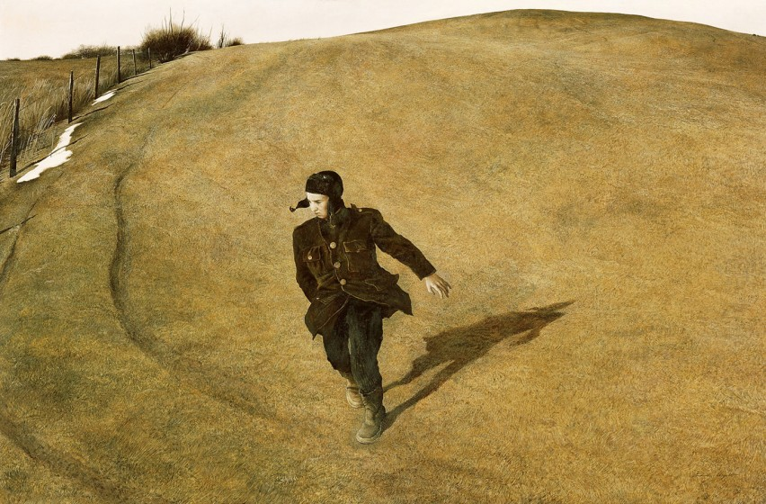
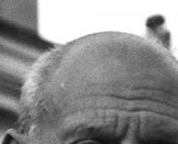
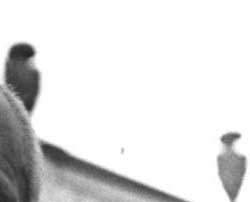
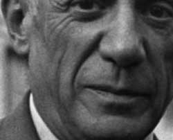
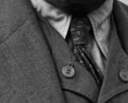

Predstavnici
Izraz za umjetnost koji se odnosi na prikaz ljudske figure, međutim, izmijenjen ili iskrivljen. Često se primjenjuje na slike i skulpture napravljene nakon apstrakcije
dvadesetog stoljeća koja je ponovno uvela elemente ljudskog tijela u apstraktne stilove, uključujući radove Luciana Freuda, Franka Auerbacha i Andrewa Wyetha.
Lucian Freud
 Frank Auerbach
 Andrew Wyeth
 

Najpoznatiji predstavnik
Pablo Picasso



